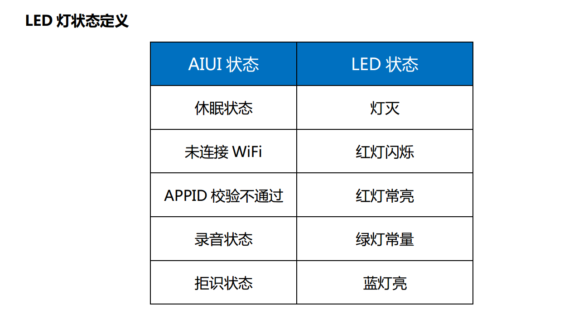

2.4 常见问题¶
Q: appid和key在哪里创建？
A: AIUI解决方案 处登录，点击AIUI应用管理 ，即可浏览或创建AIUI应用，获取appid和key。
Q: 开发包在哪里下载？
A: AIUI解决方案 处登录，依次点击 AIUI应用管理 -> 开发包，即可下载最新发布的开发包。
Q: 开发包下的AIUIDemo怎么使用？
A: AIUIDemo是集成AIUIServiceKit的Demo，与AIUIProductDemo的作用类似，是4.1 核心板模式开发的参考示例。
Q: 评估板和量产模块区别？
A: 评估板中间的核心板卡就是后面量产模块的最终形态。评估板下面底板只是核心板卡的接口扩展，为了更好的连接和调试。
Q: AIUI商务怎么联系？
A: AIUI解决方案 页面底部有商务的联系方式。
Q：同一网络搜索不到设备
A： 先用手机建立热点测试，是否可以搜索到AIUI设备，如果可以搜索到，那说明原WIFI的设置有问题。
Q：手机评估板客户端上的出错错误码是什么意思，比如10120 ？
A：AIUI的错误码在AIUI错误码中附录 错误码一节有详细说明。
- 10120
- 结果等待超时，多数是网络原因造成。
- 21003
- vad错误，取得AIUI配置文件，确认aiui.cfg文件中vad配置是否正确。
- 10407
- 手机端配置的APPID或key有问题
Q：手机端同步配置出错
A：adb连接板子，删除/sdcard/AIUI/cfg/aiui.cfg文件，重新启动AIUI评估板，用手机客户端重新扫描连接AIUI板子设置APPID，Key和场景参数。
Q：为什么评估板开机有声音，唤醒却没有声音？
A：确定手机端ControlClient配置中 是否启动AIUI后处理程序 是否已勾选。
Q：AIUI交互过程中的识别音频保存？
A：参见10.2 音频保存。
Q：发音人或者唤醒的资源怎么替换？
A：参见6. 唤醒和合成。
Q：合成资源替换了，唤醒还是萌萌的声音?
A：目前处理唤醒为了更好的体验效果，播放的是录制好的音频，而不是合成的声音。所以换了合成资源，只会影响后面交互的合成播放。
Q：评估板上LED灯各个颜色是什么意思 ？
A：在AIUI评估板使用手册中有详细说明：

Q：AIUI在一分钟后就自动休眠了，怎么让它的时间更长一点？
A：参见3.2 配置文件中交互参数interact_timeout的修改。
Q: 设置拾音波束是干嘛用的?
A: 设置拾音方向的功能是考虑机器人在移动时，导致后面的交互可能与先前唤醒的角度不一致， 导致拾音效果不好的情况提供的。AIUIMessage中CMD_SET_BEAM设置，arg1表示设置的拾音波束号。不同类型麦克风的拾音波束号参见《麦克风设计参考》。
只有在唤醒之后设置拾音波束才有作用
Q: 我购买的多个开发板可以用同一个appid吗？
A：可以。一个APPID跟一个产品对应，一个APPID可以对应多个设备。